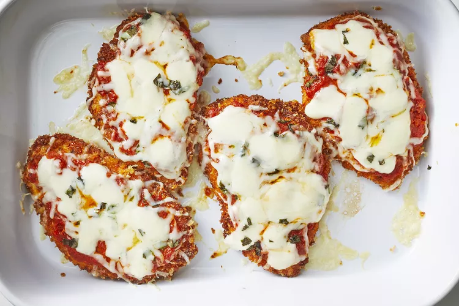

Chicken Parmesan

Link to the original recipe: allrecipes
Ingredients
- 4 skinless, boneless chicken breast halves
- salt and freshly ground black pepper to taste
- 2 large eggs
- 1 cup panko bread crumbs, or more as needed
- ¾ cup grated Parmesan cheese, divided
- 2 tablespoons all-purpose flour, or more if needed
- ½ cup olive oil for frying, or as needed
- ½ cup prepared tomato sauce
- ¼ cup fresh mozzarella, cut into small cubes
- ¼ cup chopped fresh basil
- ½ cup grated provolone cheese
- 2 teaspoons olive oil
Directions:
- Preheat an oven to 450 degrees F (230 degrees C).
-
Place chicken breasts between two sheets of heavy plastic (resealable freezer bags work well) on a solid, level surface.
Firmly pound chicken with the smooth side of a meat mallet to a thickness of 1/2-inch. Season chicken thoroughly
with salt and pepper.
- Beat eggs in a shallow bowl and set aside.
- Mix bread crumbs and 1/2 cup Parmesan cheese in a separate bowl, set aside.
- Place flour in a sifter or strainer; sprinkle over chicken breasts, evenly coating both sides.
-
Dip a flour-coated chicken breast in beaten eggs. Transfer breast to the bread crumb mixture, pressing crumbs into both sides.
Repeat for each breast. Let chicken rest for 10 to 15 minutes.
-
Heat 1/2 inch olive oil in a large skillet on medium-high heat until it begins to shimmer.
Cook chicken in the hot oil until golden, about 2 minutes per side. The chicken will finish cooking in the oven.
-
Transfer chicken to a baking dish. Top each breast with 2 tablespoons tomato sauce.
Layer each chicken breast with equal amounts of mozzarella cheese, fresh basil, and provolone cheese.
Sprinkle remaining Parmesan over top and drizzle each with 1/2 teaspoon olive oil.
-
Bake in the preheated oven until cheese is browned and bubbly and chicken breasts are no longer pink in the center,
15 to 20 minutes. An instant-read thermometer inserted into the center should read at least 165 degrees F (74 degrees C).
Back to top↑